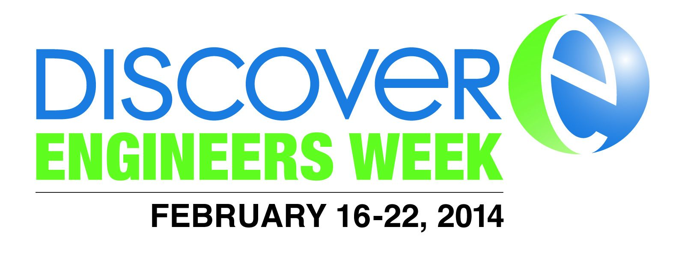

Engineers Week 2014
Monday, February 17, 2014
- Engineering Scholars Day 9:30am - 1:00pm
- School Presentation, Tours, Student Panel
- Location: Busch Campus Center - Multi Purpose Room
- Registration: 9:00am
- Directions
- Parking Locations: Lots 51, 59, 60B & 67
Tuesday, February 18, 2014
- Cardboard Canoe Races 6:30pm - 10:00pm
- Come watch young engineers put their skills to the test by building a canoe from scratch! Race it down the rapid waters of Werblin!
- Location: Sonny Werblin Recreation Center
- Come watch young engineers put their skills to the test by building a canoe from scratch! Race it down the rapid waters of Werblin!
Wednesday, February 19, 2014
- Young Engineers Day - To cultivate a love of engineering at an early age, we invite K-12 schools to join us.
- Engage K-12 students in a series of age appropriate, hands-on workshops as an introduction to engineering;
- Encourage K-12 students to pursue degrees in one of the vast numbers of engineering or other technical fields;
- Apply and enhance teamwork abilities that will ultimately be beneficial for future projects;
- Introduce young students to the opportunities and advantages acquired by college students that were once in their place;
- Promote leadership skills;
- Stress the importance and values of networking and communicating with peers and adults; and
- Increase the number of students, especially underrepresented groups pursuing a career in engineering.
- Time: 9:30am - 1:00pm
- Location: Busch Campus Center
- For more information please contact Michael Brown, Assistant Dean for Engineering Education, mikebr@rci.rutgers.edu
- Dean's Distinguished Lecture: Ramsey Homsany, ENG'97, General Counsel at Dropbox
- Location: Fiber Optics Auditorium
- Time: 3:30pm (Reception to follow lecture)
- Nerd Olympics
- An indoor carnival-type event with different activities or games at each table. Activities and games range from textbook relay races to an egg drop contest and include walking on a pool of oobleck.
- Busch Campus Center, Multi Purpose Room
- Time: 6:00 PM - 10:00 PM
Thursday, February 20, 2014
- Men's Basketball Tailgate - Rutgers vs. Memphis
- Location: Livingston Campus Center Gathering Lounge
- Parking Locations: Lots 105,112 & the Yellow Lot
- Time: 5:30pm
- Game starts: 7:00pm
-
School of Engineering Celebrates Engineering in the Movies Film Series
-
Location: Livingston Campus, Rutgers Cinema,105 Joyce Kilmer Avenue, Piscataway
-
Time: 7:00 pm
-
Movie: "The Matrix"
-
FREE - includes soda and popcorn. FIRST COME, FIRST SERVED.
-
For more information please call 848-445-2214